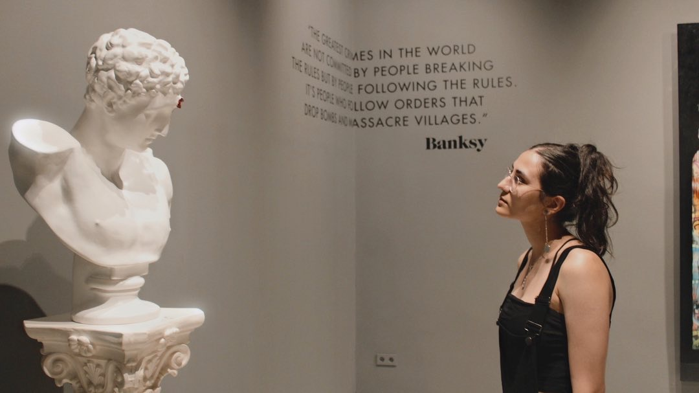
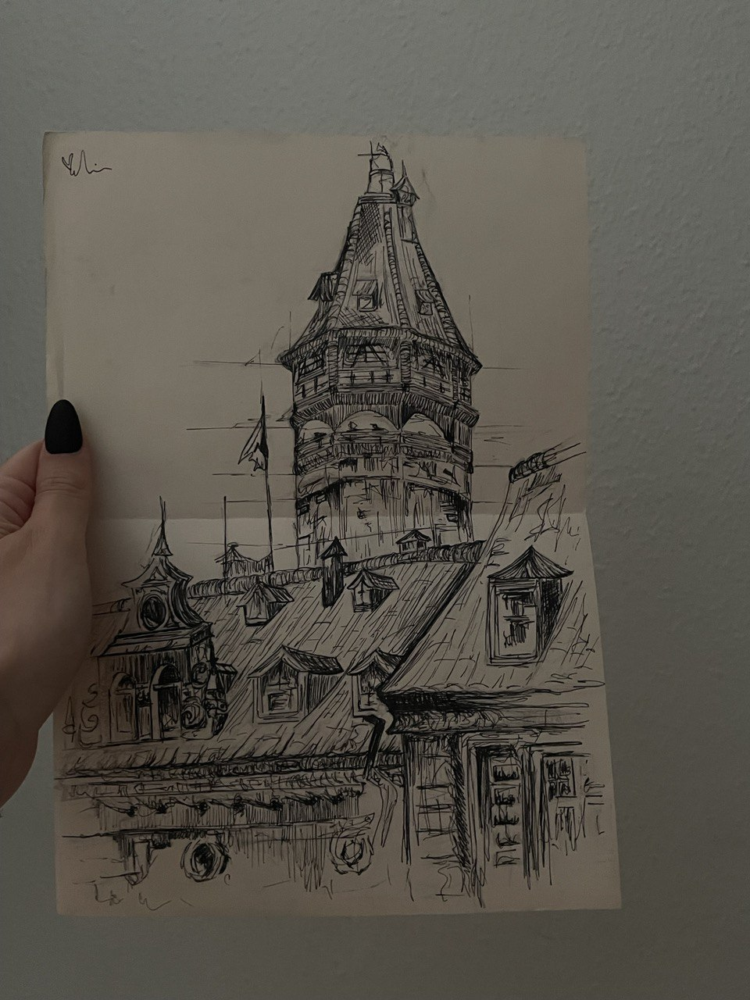

Art is somewhat of a therapy that contains everything. when the word "Art" is heard, the mind flies to create images to describe "Art" the best way; the first thing that comes to mind is painting, Mona Lisa, that painter who cut his ear for a girl, etc. But "Art" is just more than that. Every branch of art stimulates a part of the human body; mentally, physically, emotionally, etc. That is why the article is called "The Art Is You".
The connection between art and humans
If the fact that art (a masterpiece) is created by humans, put aside, it can be seen that the human body is also a masterpiece. The human body contains an instrument in its larynx, there are billions of books in the head that no one has ever read; millions of worlds that are built as an imagination, and they could not get any more majestic than they are right now. And yet it does not seem to be taken care of as it should.
Knowing all this from the root, it can be seen that everything is connected. Art to human body, human body to art, art to nature, nature to human body, and so on. Hate to break it to you but math and physics have such a big role in creating art. Fibonacci is enough to explain all that.